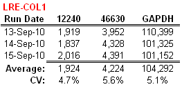
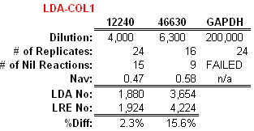

To provide a hands on example of how quantitative accuracy can be evaluated, data has been taken from the Experiment Demo Database is used to demonstrate two central aspects, which are assay precision and absolute accuracy. To assess the general level of assay precision, target quantities generated from the three runs for the 12240, 46630 and GAPDH targets within the COL 1 sample are compared:

The CV values provide a general indication of run to run variance, producing an averages of about ±5%. This is reflective of the high level precision that can be achieved when a high performance instrument (AB 7500) is combined with high performance amplicons.
However, this type of analysis cannot be used to assess absolute accuracy. As described in the LDA Overview, Poisson distribution can be used to conduct absolute quantification that is independent of real-time PCR by diluting the target to below one molecule per reaction and conducting replicate reactions (16-32). Based on the number of nil reactions (i.e. those that fail to produce an amplification profile), the target quantity can be determined using the equation:
where "#nil" is the number of amplification reactions that fail to produce an amplification profile (i.e. 0 N aliquots), "#total" is the total number of replicate reactions conducted and "Nav" is the target concentration. An important qualification is that reactions that produce of non-specific amplification products must either be absent or can be identified, as such reactions are false positives. Indeed, the GAPDH amplicon used in this analysis did not fulfill this requirement, as it generated a large number of small, non-specific products. While this is generally not typical, it does provide an example of how LDA can also provide useful insights into amplicon performance that may not be evident from testing with high target quantities.
